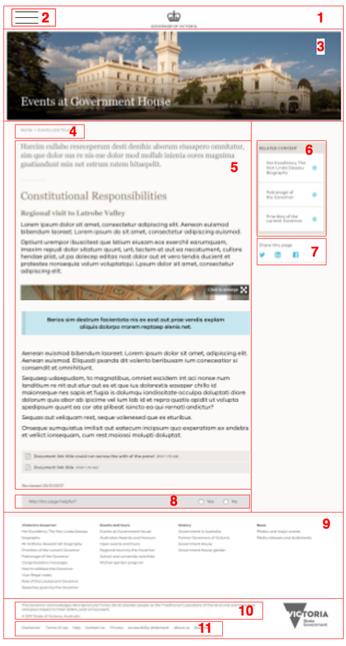

Tide API¶
Content API is built from a set of contributed modules and custom code provided through Tide API module.
Why JSONAPI?¶
Why we selected JSONAPI standard over generic REST provided by Drupal core:
- JSON is a standard of REST, a subset of generic REST rules.
- JSONAPI allows to query individual items and collections. Drupal JSONAPI module automatically exposes entities as endpoints. Because most of functionality is implement as entities in Drupal 8, there is no need for custom code to expose required features.
- JSONAPI is a newer format
- JSONAPI will be included in Drupal core. Documentation on using Drupal JSONAPI module: https://www.drupal .org/docs/8/modules/json-api
It is assumed that API consumers support the following:
- Can traverse data.
- Can cache based on response headers.
- Can resolve relationships by following links.
Drupal JSONAPI and related modules¶
jsonapi - main module that exposes entities as endpoints and provides support for REST operations.
jsonapi_extras - helper module to alter
JSONAPI config: endpoints prefix (we are using /api/v1) and enable/disable
endpoints for automatically exposed entities (we use this to limit access to
internal entities).
Endpoints¶
| Component | Content API endpoint | Comment | |
|---|---|---|---|
| 1 | route | /api/v1/route?alias=<alias> |
|
| 2 | main menu | /api/v1/menu_link_content/menu_link_content?filter[menu_name][value]=main |
|
| 3 | banner | TBD | If exposed as a block - use block-based endpoint. If exposed as a content field - use entity endpoint with inclusion. |
| 4 | breadcrumbs | TBD | Not supported out of the box. May need to use main menu to build breadcrumbs by FEF. |
| 5 | content | /api/v1/page/<UUID>?include=field_page_paragraph |
Can be combined with 6 |
| 6 | related content | /api/v1/page/<UUID>?include=field_related_content |
Can be combined with 5 |
| 7 | share block | /api/v1/block_content/share_block |
Content is static HTML |
| 8 | was this page helpful | TBD | Posting of webform submissions is not supported. Custom module may be required. |
| 9 | footer main menu | /api/v1/menu_link_content/menu_link_content?filter[menu_name][value]=main |
|
| 10 | copyright | /api/v1/block_content/copyright |
Content is static HTML |
| 11 | footer menu | /api/v1/menu_link_content/menu_link_content?filter[menu_name][value]=footer |
|
| 12 | Sites information | /api/v1/taxonomy_term/sites |
|
| 13 | Router | /api/v1/router |
Alias lookup. May be required for ad-hoc queries from FEF. |
Page example that may use these endpoints 
Request flow¶
The diagram below demonstrates how a single page is assembled by VueJS when hitting multiple endpoints.
VueJS retrieves site information and caches it internally until the next cache
clear. Each consumer site has only site UUID (taxonomy term UUID from Site
vocabulary) hardcoded. The rest of configuration comes from taxonomy term: logo,
slogan, footer text, main menu name, footer menu name. This information is later
used in follow-up requests to retrieve relevant information.
Content API Content, Content API Menu, and Content API Block are shown here as separated endpoints (they are indeed separate), but are handled by the same internal entity controller from JSONAPI Drupal module. The content is filtered by Content API Filter based on provided site and path query parameters. If no site or path is provided the request is considered invalid and an error response is returned. Content API Filter is a thin layer (e.g. request event listener) in front of all JSONAPI endpoints. For example, if the content exists, but is not assigned to a site or section, it is considered as non-existing content when accessed from this site.
Internal Router is a mechanism to lookup internal path by provided alias. There is a similar functionality with a Router Endpoint, but it resolves aliases without additional Drupal-to-Drupal request.
{kind=link}
End-to-end URL resolution¶
The diagram below describes how URL requested by a web browser is resolved by Drupal and served by VueJS. It covers both front-end and back-end mechanisms.
To leverage JSONAPI module in Drupal, we are using API Router to resolve requested paths to a set of information about the route (UUID, content type, path, alias). This information then used by Client API path builder to assemble a path to then send a second request to the JSONAPI endpoint.
It is important to note that due to how content links can be provided within
content, the path resolution within API Router should be able to find the best
match from either path or alias provided. For example,
paths about-us, /about-us, node/123, /node/123 should all resolve to
UUID of About Us page. When matched entity found, API Router also checks if it
has the specified site assigned and returns an error if this path is not
available. Also, API Router has all lookups cached in Drupal's dynamic cache,
which is tagged with cache tags (so that the cache for path is cleared
when entity is updated).
{kind=link}
Router API endpoint¶
To control content aliases from Drupal and resolve requests coming from Browser into FEF, a special Router endpoint exists to perform a lookup on provided path. Because the provided path can be either internal Drupal path or an alias, the lookup searches through all existing aliases and internal paths.
When non-existing alias is provided, the endpoint returns an error according to JSONAPI specification.
Router API also allows to filter by site if site URL query parameter is provided.
Referenced entities¶
JSONAPI supports including referenced entities in response by using include
query parameter and a comma-separated list of entity reference fields. For
example, /api/v1/page/<UUID>?include=field_page_paragraph.
Drupal caching¶
Response headers pass-through Drupal-generated cache tags. This means that reverse proxies can bind to Drupal cache tags and invalidate their caches as soon as Drupal caches become invalid.